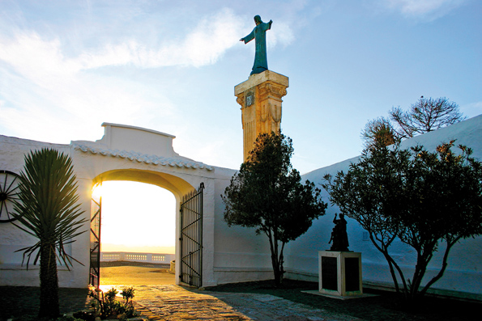

Es Mercadal, im Zentrum von Menorca
 Die Gemeinde Mercadal, mit einer Gesamtfläche von 134 Quadratmeilen, hat als Knotenpunkt die geleichnamige Stadt Es Mercadal. Die Gemeinde grenzt an das im Osten gelegene Alaior, in die im Westen gelegene Gemeinde Ferreries und im Süden an Es Migjorn. Die meisten Bewohner befinden sich in Es Mercadal und Fornells, was an der Nordküste liegt. Es gibt auch noch einige erschlossene Touristengebiete an der Küste die sich zu diese Gemeinde zählen. Die aktuell Stadt war der Ursprung der alten Gemeinde, zu der sich die antike Pobla de Mercadal und auch Santa Agueda zählten, allerdings haben sie sich heute unabhängig gemacht. Es Mercadal ist eine der ältesten Städte von Menorca. Im Jahre 1301 wurde von König James(Jaume) II ein Donnerstagsmarkt auf der Insel bestimmt und dieser Ort hiess, La Pobla del Mercadal. Sicherlich war dieser Markt verantwortlich für die Namensgebung der zukünftigen Stadt, in lateinisch mercatallus, und bedeutet soviel wie, ein „Ort an dem Geschäftstätigkeiten durchgeführt werden“.
Die Gemeinde Mercadal, mit einer Gesamtfläche von 134 Quadratmeilen, hat als Knotenpunkt die geleichnamige Stadt Es Mercadal. Die Gemeinde grenzt an das im Osten gelegene Alaior, in die im Westen gelegene Gemeinde Ferreries und im Süden an Es Migjorn. Die meisten Bewohner befinden sich in Es Mercadal und Fornells, was an der Nordküste liegt. Es gibt auch noch einige erschlossene Touristengebiete an der Küste die sich zu diese Gemeinde zählen. Die aktuell Stadt war der Ursprung der alten Gemeinde, zu der sich die antike Pobla de Mercadal und auch Santa Agueda zählten, allerdings haben sie sich heute unabhängig gemacht. Es Mercadal ist eine der ältesten Städte von Menorca. Im Jahre 1301 wurde von König James(Jaume) II ein Donnerstagsmarkt auf der Insel bestimmt und dieser Ort hiess, La Pobla del Mercadal. Sicherlich war dieser Markt verantwortlich für die Namensgebung der zukünftigen Stadt, in lateinisch mercatallus, und bedeutet soviel wie, ein „Ort an dem Geschäftstätigkeiten durchgeführt werden“.
Es Mercadal hat einen schönen Stadtrand rund ums historische Zentrum. Gut strukturiert winden sich die Gassen um den alten Kanal der durch das Zentrum führt und erstrecken sich bis zum „Pla de ses eres“. Auf dem erhöhtestem Punkt der Stadt befindet sich die Kirche „San Martí und wird umzingelt von weissen Häusern mit roten Dächern. Mit dem Bau dieses Tempels wurde Mitte des achtzehnten Jahrhunderts begonnen und letztendlich wurde er dann im frühen neunzehnten Jahrhunderts mit seinem noch fehlendem quadratischem Glockenturm gekrönt. Ein paar Meter entfernt ist das Rathaus, im Volksmund auch „la Sala“(der Saal) genannt und hebt sich mit seiner Eingangstür und dem Balkon im ersten Stockwerk von den anderen Gebäuden ab. Überigens existierte dort auch der alte Glockenturm.
Zu dem architektonischem Erbe gehört das lokale Wasserdepot „Aljup“ das in der Epoche der britischen Besetzung gebaut wurde. Das grosse Reservoir wurde ehemals von Gouverneur Richard Kane geplant und fasst 300 Tonnen. Andere Elemente von grosser ethnologischen Bedeutung ist auch die kleine Dorfschmiede Pepe Carter in der Sie ein kleines Mueseum finden oder die kleine Mühle d´en Biel, die viel kleiner ist als die imposante Mühle von s`Aranjí. Durch die Verbingung der Gebäude kann man die damalige Mehlfabrik erahnen, die einen antiken Industriezweig von Menorca ausmachten. Rund um das Dorf befinden sich noch drei andere Windmühlen: die des Tramuntana, die des Racó und d`Enfora, auf dem Weg des Kane, Richtung Ferreries.
Am Rande des Dorfes befindet sich auch die Zugangsstrasse die direkt auf den grössten Berg Menorcas führt, den 357 Meter hohen „Monte Toro“. Sie haben von dort oben einen spektakulären Ausblick über die gesamte Insel. Es ist auch das spirituelle Zentrum von Menorca für die Menorquiner. Dort befindet sich auch die Heiligenstatue von „Mare de Deu del Toro“ die seid dem dreizehnten Jahrhundert nicht frei ist von ihrer spannenden Legende. In der Nähe von Es Mercadal gibt es eine vielfältige Natur. Herraustechend sind wohl die Bassas de Lluriac ein kleines natürliches Biothop an dem es mehrere kleine temporäre Teiche am Ende des Flusses gibt. An dem nördlichsten Punkt der Gemeinde an der Küste gelegen liegt Cap Cavalleria. Auf dieser grössten natürlichen Halbinsel befindet sich der älteste der Leuchttürme Menorcas der aus der Mitte des neunzehnten Jahrhunderts stammt.
 In seiner unmittelbaren Umgebung liegt der kleine Hafen von Sa Nitja mit einem gleichnamigen römischen Dörfchen, was von grossem archeologischem Wert ist für die Menschheit und Umwelt. Diese Region ist eine Synthese des ökologischen Reichtums von Menorcas Küste. Es gibt, grad an der Nordküste von Es Mercadal auch viele idyllische Strände, wie zum Beispiel der von Cavalleria, Binimellà oder Pregonda die unberührt sind und ihnen kristallklares türkisfarbenes Wasser bietet. Es gibt auch einige Touristenstrände, sowie Tirant, Son Saura oder Arenal die einen etwas leichteren Zugang haben. Der Cami de Cavalls verläuft in der Gemeinde Mercadal direkt an der Küste entlang, die Wanderung durch die wundervolle Natur lohnt sich. Gemeinsam mit dem Cami den Kane (der erste Verbindungsweg de Insel) sind diese beiden Strecken wohl die historischsten von der Gemeinde.
In seiner unmittelbaren Umgebung liegt der kleine Hafen von Sa Nitja mit einem gleichnamigen römischen Dörfchen, was von grossem archeologischem Wert ist für die Menschheit und Umwelt. Diese Region ist eine Synthese des ökologischen Reichtums von Menorcas Küste. Es gibt, grad an der Nordküste von Es Mercadal auch viele idyllische Strände, wie zum Beispiel der von Cavalleria, Binimellà oder Pregonda die unberührt sind und ihnen kristallklares türkisfarbenes Wasser bietet. Es gibt auch einige Touristenstrände, sowie Tirant, Son Saura oder Arenal die einen etwas leichteren Zugang haben. Der Cami de Cavalls verläuft in der Gemeinde Mercadal direkt an der Küste entlang, die Wanderung durch die wundervolle Natur lohnt sich. Gemeinsam mit dem Cami den Kane (der erste Verbindungsweg de Insel) sind diese beiden Strecken wohl die historischsten von der Gemeinde.
Die grosse Fiesta, mit den Pferden als Protagonisten, findet am dritten Wochenende im Juli statt. Es Mercadal ist auch sehr berühmt für seine hervorragende und traditionelle Gastronomie. Probieren sie die speziellen Kekse „carquiyols“ und die anderen Leckereien die Sie bei Ihrem Besuch entdecken, es lohnt sich wirklich. Es Mercadal ist hauptsächlich auf Dienstleistungsservice spezialisiert und hat ein reichhaltiges Angebot an Aktivitäten rund um das Messegelände, sowie die alljährliche Pferdemesse, die Handwerkermesse und auch das Radio-Museum können Sie dort besuchen. In den Letzten Jahren populär geworden ist der saisonale Handwerker und Agrarmarkt, der von Juni bis Oktober jeden Donnerstag Nachmittag in der Strassen von Es Mercadal aufgebaut wird. Dardurch das die Gemeinde eine sehr grosse Vielfalt von Aktivitäten anbieten, können Sie Golfen in Son Park oder zum Reiten oder zu Wassersportaktivitäten nach Fornells fahren.